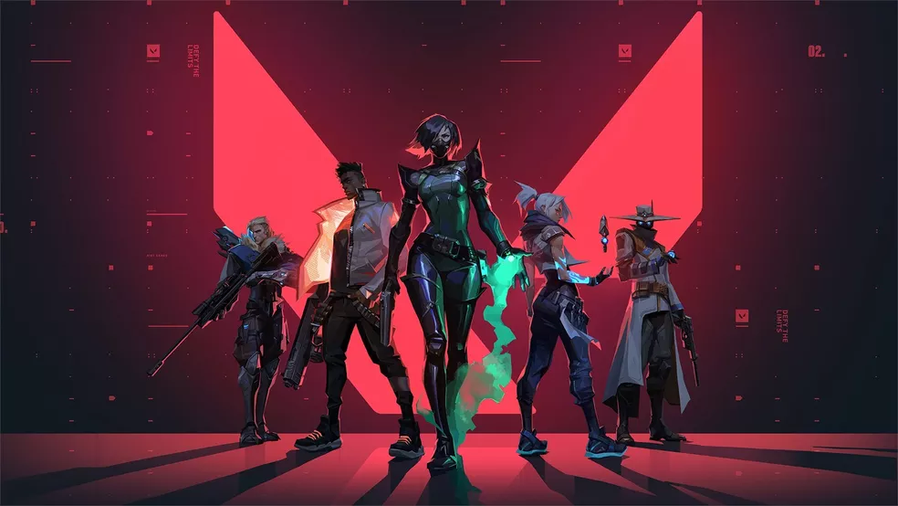
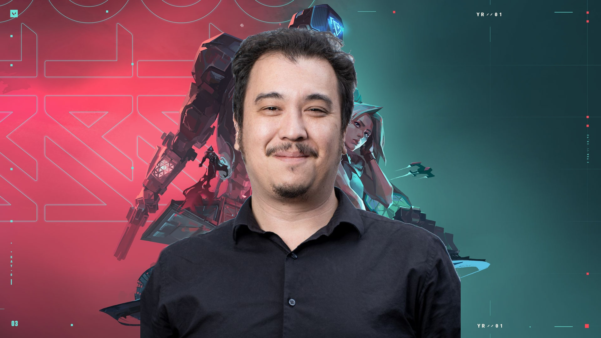

Os melhores spots de todos os personagens em um só lugar
História do valorant
Valorant é um jogo eletrônico multijogador gratuito para jogar de tiro em primeira pessoa desenvolvido e publicado pela Riot Games. É o primeiro jogo do gênero desenvolvido pela empresa,sendo anunciado pela primeira vez com o codinome Project A em outubro de 2019, em um evento de comemoração de 10 anos de League of Legends.Foi lançado em 2 de junho de 2020 para Microsoft Windows.

Desenvolvimento
Valorant é desenvolvido e publicado pela Riot Games, conhecida pelo grande sucesso League of Legends. O desenvolvimento começou em 2014, dentro de sua divisão de pesquisa e desenvolvimento. Joe Ziegler, o diretor do jogo, é creditado por criar a ideia inicial de Valorant ao formular outros títulos que a Riot poderia desenvolver ao conversar com designers de outros jogos. David Nottingham é o diretor criativo do jogo. Valorant foi construído na Unreal Engine.

1° Campeonato competitivo
Desde o lançamento de VALORANT, muito se questionou sobre a presença do jogo nos esportes eletrônicos (esports). O cenário competitivo começou a engatinhar e começaram a serem divulgados os primeiros campeonatos independentes: Copa Rakin, Gamers Club Ultimate, BLAST VALORANT Twitch Invitational, dentre outros. E chegou a hora da Riot Games anunciar o seu primeiro campeonato oficial, o VALORANT First Strike.
Formato
O torneio será subdividido em: Qualificatórias Abertas, Qualificatória Final e First Strike. A primeira contará com quatro qualificatórias, sendo que estarão presentes nestas, equipes cujos jogadores tenham rank mínimo Imortal 1. Cada uma das Qualificatórias Abertas contará com a participação de 512 times, sendo 2.048 equipes no total; e de cada Qualificatória Aberta serão selecionados 8 melhores times. Na sequência, estes 32 times (8 de cada qualificatória) competirão entre si na Qualificatória Final, os 8 melhores participarão do First Strike em Dezembro.
Andamento
Até Dezembro de 2022, o jogo apresentava cinco episódios, incluindo 20 agentes (personagens) e 8 mapas.Em termos de jogabilidade, durante a sua experiência nas partidas, é possível adquirir 18 armamentos diferentes. Depois de seu lançamento oficial, quatro novos modos de jogo foram adicionados, a Disputa de Spike, o Mata-Mata,Replicação e a disparada. O jogo conta com uma mecânica de passe de batalha que permite o jogador colecionar até 50 itens através da experiência obtida ao jogar partidas.
O jogo também conta com um ecossistema competitivo, com campeonatos, equipes e jogadores profissionais ao redor do mundo. A Riot Games organiza os principais eventos, que são aderidos a sua turnê global, o Valorant Champions Tour. A desenvolvedora também ajuda a organizar, em parceria com outras empresas, uma série de competições chamada de Valorant Game Changers, que contribui para a inclusão de mulheres e pessoas de gêneros marginalizados ao cenário profissional.